Show other secondary papers
Amorphous vs. Short-Range-Ordered Complexions: Consequences for Grain-Boundary-Mediated Plasticity in Nanocrystalline Al-Ni Alloys
Authors: Frederic Sansoz, Eve-Audrey Picard
Type: theory · Category: disordered systems and neural networks · PDF: https://arxiv.org/pdf/2605.27218v1
Analysis basis: full PDF text, analyzed in chunks
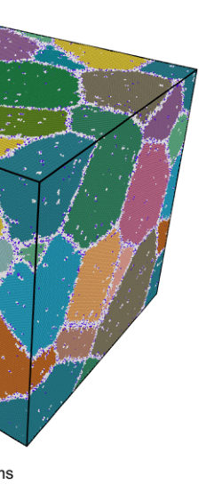
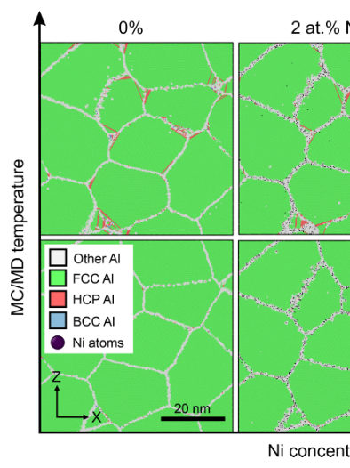
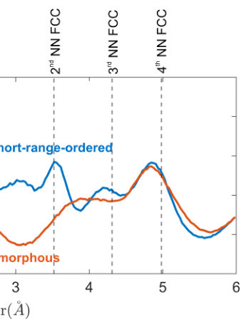
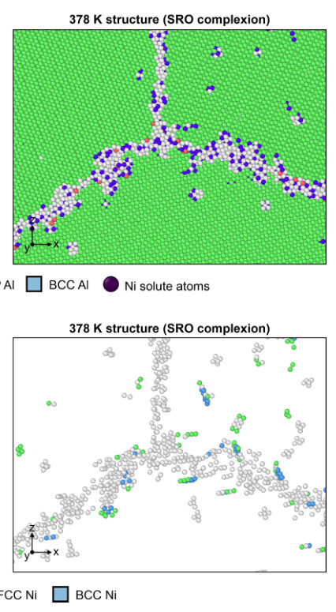
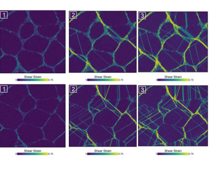
Summary. This paper explores how the structural state of grain boundaries—either purely amorphous or containing short-range order—dictates the mechanical properties of nanocrystalline Al-Ni alloys. It demonstrates that while SRO increases material strength, it also triggers detrimental shear localization. These findings suggest that controlling the structural order at interfaces can be used to engineer the plasticity of nanostructured materials.
Why it may be interesting. not directly relevant
Detailed structure
Main problem. The study investigates how local short-range ordering (SRO) within amorphous grain-boundary complexions influences the plasticity and mechanical response of nanocrystalline Al-Ni alloys.
Main result. Amorphous grain boundaries promote homogeneous plasticity via shear transformation zones but lower strength, whereas SRO-containing boundaries increase strength but induce intense shear localization due to stress heterogeneity.
Method. Large-scale hybrid Monte Carlo and Molecular Dynamics (MC/MD) simulations using the LAMMPS framework and an EAM interatomic potential.
Model / system. Nanocrystalline Al-Ni alloys (Al-2Ni and Al-4Ni) consisting of an FCC Al polycrystal with approximately 13 million atoms and an average grain size of 24 nm.
Key observables. Stress-strain curves, grain-boundary thickness, radial distribution functions (RDF), polyhedral template matching (PTM) for structural ordering, and atomic-scale von Mises stress and strain distributions.
Important parameters / regimes. Ni concentrations (2 at.% and 4 at.%), annealing temperatures (378 K and 913 K), and engineering strain rate (10^8 s^-1).
Assumptions / limitations. The interatomic interactions are accurately captured by the EAM potential, and the grain boundary complexions reach equilibrium via the simulated annealing regimes.
Figures summary. Figure 1 shows the equilibrium microstructure and Ni segregation; Figure 2 presents the Al-Ni phase diagram; Figure 3 compares Ni-Ni RDF curves; Figure 4 visualizes the structural difference between amorphous and SRO complexions; Figures 5-6 show tensile behavior and shear strain; Figures 7-8 compare atomic-scale von Mises stress distributions.
Paper structure. The paper introduces the problem of GB-mediated plasticity, describes the MC/MD simulation setup and structural analysis tools, presents the structural evolution of GBs under different annealing temperatures, compares the mechanical response (strength vs. localization) of amorphous and SRO regimes, and concludes with implications for complexion engineering.
Abstract
Amorphous grain-boundary (GB) complexions in thermally stable nanocrystalline alloys are commonly assumed to be structurally homogeneous, yet their disordered nature makes them susceptible to local short-range ordering (SRO). The influence of local SRO on GB-mediated plasticity mechanisms in such complexions remains poorly understood. This article employs large-scale Monte Carlo and molecular dynamics simulation to address this gap through simulations of nanocrystalline Al-Ni alloys at two Ni concentrations, 2 at.% and 4 at.%. Annealing at 913 K produces thick uniform amorphous intergranular film complexions, while annealing at 378 K produces semi-amorphous complexions containing FCC-type and BCC-type SRO. These two complexion states produce fundamentally different mechanical responses. Amorphous complexions act as dislocation sinks, suppressing shear localization and promoting homogeneous plasticity through shear transformation zones, but at the cost of lower strength. SRO complexions generate higher strength but also promote heterogeneous stress concentrations across the GB network, leading to intense shear localization regardless of Ni concentration. This contrast reflects a fundamental shift in governing mechanism, from shear-transformation-zone-controlled behavior in amorphous complexion alloys to GB-stress-heterogeneity-controlled behavior in SRO complexion alloys. These findings highlight the potential of complexion engineering to tailor the mechanical properties of nanocrystalline materials.
Antisymmetric spontaneous resistivity anisotropy due to hard-axis collapse in polycrystalline Co thin films
Authors: Y. Fernandes, J. Geshev, A. M. H. de Andrade, A. D. C. Viegas
Type: experiment · Category: other · PDF: https://arxiv.org/pdf/2605.27099v1
Analysis basis: full PDF text, analyzed in chunks
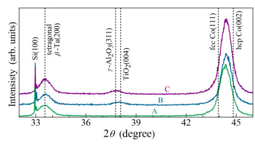
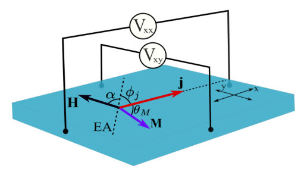
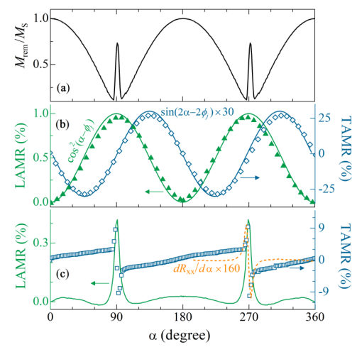
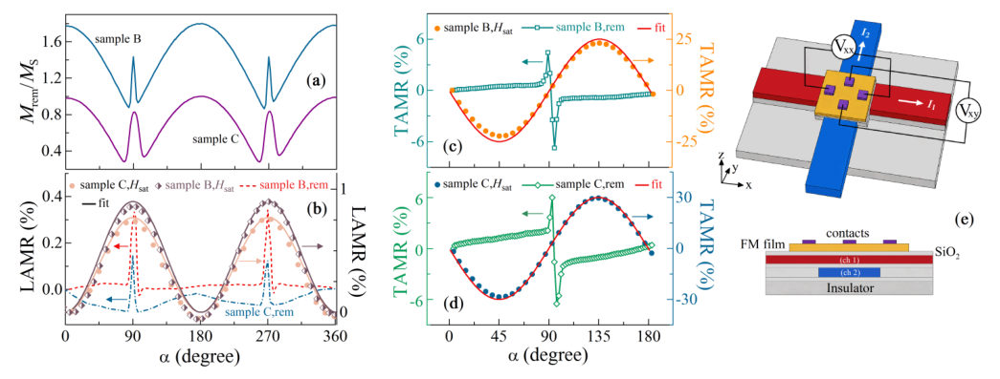
Summary. This paper demonstrates that applying a magnetic field to polycrystalline Co thin films can create stable, multi-level magnetic states due to hard-axis collapse. These states are detectable via the planar Hall effect, offering a simple and low-cost platform for developing next-generation magnetic memory and sensors.
Why it may be interesting. not directly relevant
Detailed structure
Main problem. Investigating the magnetoresistance phenomena associated with hard-axis collapse (HAC) in polycrystalline Co thin films and exploring its potential for multi-level magnetic memory and sensing.
Main result. The study identifies at least three stable, reproducible remanent resistance states in the planar Hall resistance, originating from non-uniform magnetic configurations, which could enable low-cost spintronic devices.
Method. DC magnetron sputtering was used for film growth, followed by XRD for structural characterization, VSM for vector magnetometry, and four-point probe transport measurements at room temperature.
Model / system. Polycrystalline Cobalt (Co) thin films (20 nm) grown on Si(100) substrates with various underlayers (Ta, TiO2, Al2O3) and induced in-plane uniaxial magnetic anisotropy.
Key observables. Longitudinal AMR (LAMR), Transverse AMR/Planar Hall Effect (TAMR/PHE), remanent magnetization (M_rem), and anisotropy field (Ha).
Important parameters / regimes. Anisotropy field (30-42 Oe), field angle (alpha), current density angle (phi_j), and remanent states (chi_1, chi_2, chi_3).
Assumptions / limitations. The behavior is assumed to be robust across different thicknesses (5 to 150 nm) and structural variations.
Figures summary. XRD patterns showing crystallinity; angular variations of remanent magnetization; LAMR data at saturation and remanence; and the antisymmetric TAMR behavior near the hard axis.
Paper structure. The paper introduces the HAC phenomenon, details the experimental fabrication and structural characterization, presents transport and magnetometry results, discusses the physical mechanism of TAMR via spin-orbit coupling, and concludes with potential applications in spintronics.
Abstract
We investigate magnetoresistance phenomena associated with the magnetization hard-axis collapse in polycrystalline Co thin films. Transport measurements reveal that, for specific orientations of the applied magnetic field, the system exhibits distinct remanent resistance levels in both the in-plane longitudinal and transverse voltage responses. In particular, the planar Hall resistance shows multiple stable and reproducible levels at room temperature, enabling the identification of at least three remanent states that can be distinguished and used for information storage. These resistance levels originate from non-uniform magnetic configurations stabilized after the application and removal of the external magnetic field in the hard-axis region. Since this phenomenon remains largely unexplored, we present an incipient study addressing its potential implications from an applied-physics perspective. The observation of such behavior in polycrystalline Co thin films grown on Si substrates suggests a simple and low-cost platform for spintronic memory and sensing devices based on the remanent planar Hall effect.
Conditions for domain-free negative capacitance
Authors: Prasanna Venkatesan Ravindran, Priyankka Gundlapudi Ravikumar, Asif Islam Khan
Type: theory · Category: other · PDF: https://arxiv.org/pdf/2605.26536v1
Analysis basis: full PDF text, analyzed in chunks
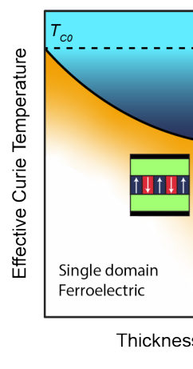
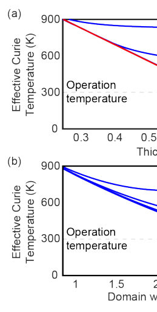
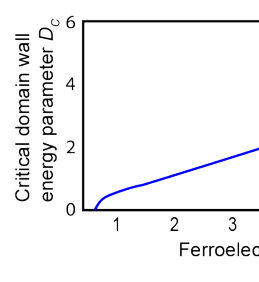
Summary. This paper identifies that controlling domain wall energy is key to achieving stable, domain-free negative capacitance in ferroelectric heterostructures. It provides a theoretical threshold (Dc) above which the system avoids the multi-domain patterns typically seen in experiments. This finding suggests that engineering high domain wall energy is a viable path for optimizing negative capacitance devices.
Why it may be interesting. not directly relevant
Detailed structure
Main problem. Determining the specific conditions, particularly regarding domain wall energy, required to achieve an ideal, domain-free negative capacitance state in ferroelectric-dielectric heterostructures.
Main result. The authors demonstrate that a stable, domain-free negative capacitance state is achieved if the domain wall energy parameter (D) exceeds a critical value (Dc), effectively suppressing domain formation.
Method. The study uses a Landau-Ginzburg-Devonshire framework and a non-linear Ginzburg-Landau equation to analytically and numerically compare single-domain and multi-domain phase transitions.
Model / system. The system consists of ferroelectric-dielectric (FE-DE) heterostructures, specifically modeled after PbTiO3/SrTiO3 superlattices, using Landau-Devonshire theory to describe polarization dynamics.
Key observables. Effective Curie temperature (T'C), polarization (P), and the domain wall energy parameter (D).
Important parameters / regimes. Domain wall energy parameter (D), critical ferroelectric thickness (tf,c), thickness ratio (r), and operating temperature (Top).
Assumptions / limitations. The model assumes the system is near the Curie temperature and relies on a dimensionless parameter to represent domain wall energy costs; it also notes limitations in the current database of domain wall energies.
Figures summary. Figure 2(b) shows the variation of T'C with D for different dielectric thicknesses, and Figure 3 illustrates the variation of the critical domain wall energy parameter Dc with ferroelectric thickness.
Paper structure. The paper introduces the problem of domain formation in negative capacitance, presents a multi-domain model using Ginzburg-Landau theory, derives the critical conditions for a domain-free state, discusses the implications for specific materials like HfO2, and concludes with future directions.
Abstract
While negative capacitance has been demonstrated in ferroelectric-dielectric heterostructures in the form of capacitance enhancement, all experimental evidence, to date, suggests the existence of domains therein. Here, we address the question: what are the conditions to achieve ideal, domain-free negative capacitance in ferroelectric-dielectric heterostructures? Our main claim is that for given thicknesses of the ferroelectric and the dielectric layers, there is a critical value of domain wall energy parameter -- above which the system would be stabilized in an ideal and robust domain-free negative capacitance state and would be robust against domain formation. Our analyses suggest that to achieve ideal negative capacitance, efforts should lie in understanding the means to control the domain wall energy on all fronts, both theory and experiments via high throughput design, discovery, and engineering of ferroelectrics.
Electride States and Superconductivity in Dense Potassium Carbides
Authors: Jiance Sun, Ting Zhong, Shoutao Zhang
Type: theory · Category: other · PDF: https://arxiv.org/pdf/2605.27201v1
Analysis basis: full PDF text, analyzed in chunks
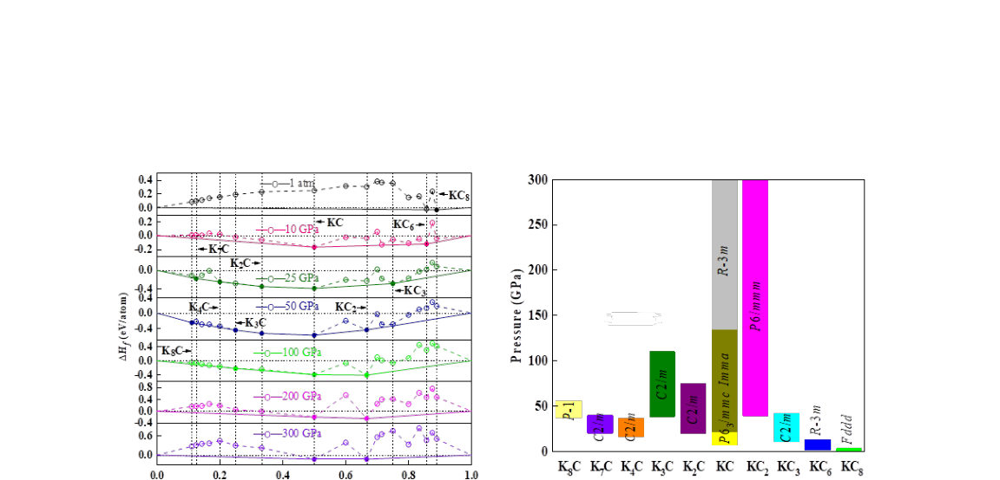
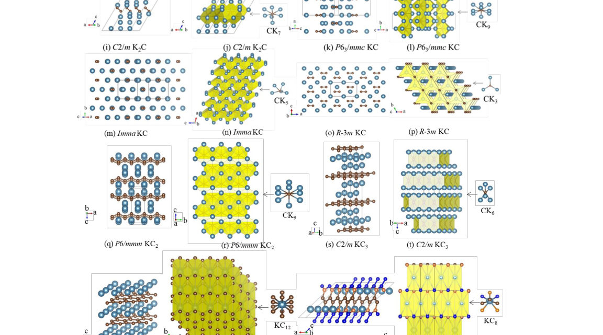
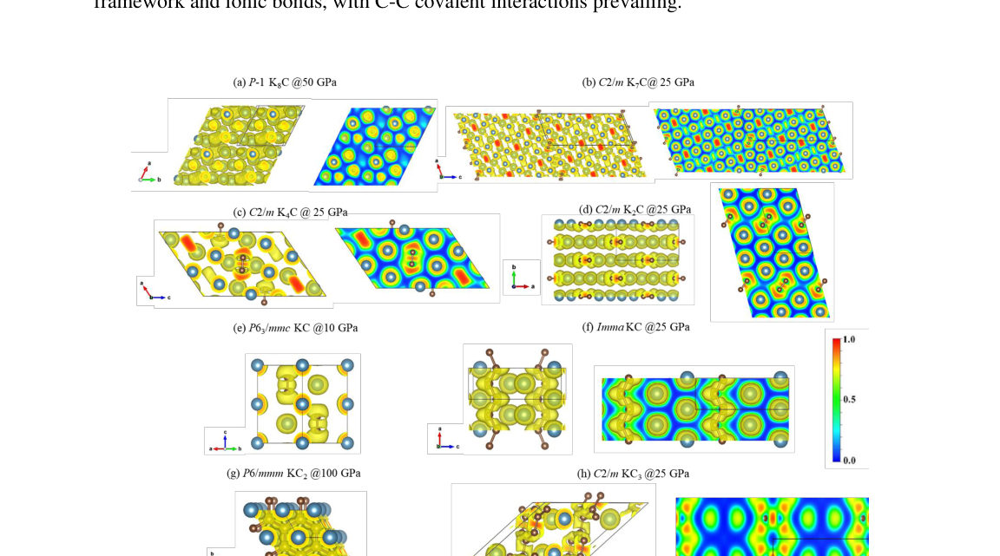
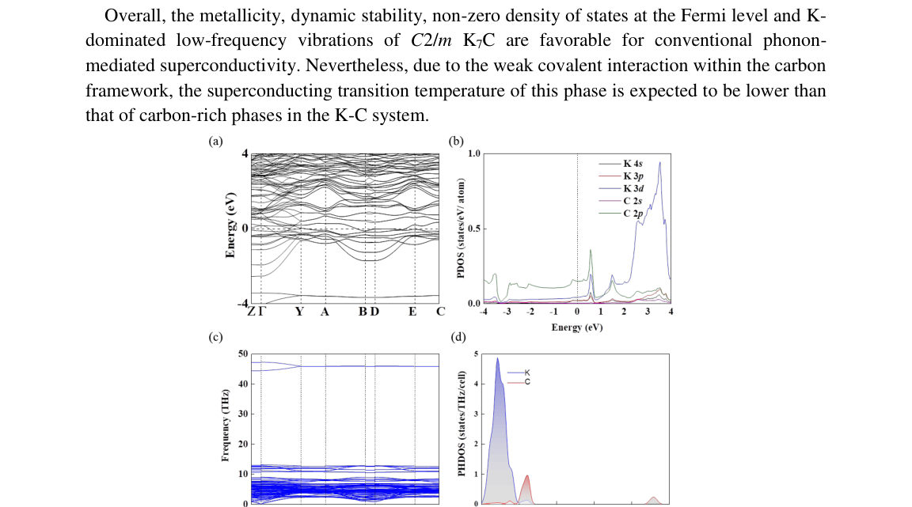
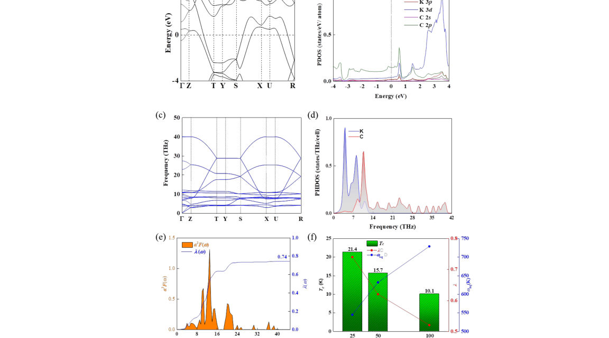
Summary. This paper uses computational methods to predict new stable potassium-carbon compounds under high pressure. It identifies a specific phase of potassium carbide (Imma KC) that could serve as a promising superconductor at relatively low pressures (25 GPa) with a Tc of 21.4 K.
Why it may be interesting. not directly relevant
Detailed structure
Main problem. The study aims to systematically investigate the structural stability, chemical bonding, and superconducting properties of the binary potassium-carbon (K-C) system under high pressure.
Main result. The researchers discovered several new stable K-C phases, most notably an orthorhombic Imma-KC phase that reaches a high superconducting transition temperature (Tc) of 21.4 K at 25 GPa.
Method. The study uses the CALYPSO swarm intelligence technique for structure prediction combined with Density Functional Theory (DFT) and the Allen-Dynes modified McMillan equation for superconductivity calculations.
Model / system. The physical system is a binary potassium-carbon (K-C) system under high pressure (up to 300 GPa), encompassing various stoichiometries such as K7C, KC, and KC3.
Key observables. Superconducting transition temperature (Tc), electron-phonon coupling constant (lambda), phonon dispersion curves, and electron localization function (ELF).
Important parameters / regimes. Pressure ranges from 1 atm to 300 GPa; Coulomb pseudopotential (mu*) set to 0.1.
Assumptions / limitations. The study relies on the accuracy of the PBE functional within the GGA approximation and assumes the validity of the BCS theory for superconductivity.
Figures summary. Figures include electronic band structures, projected density of states (PDOS), phonon dispersion curves, and phonon projected density of states (PHDOS).
Paper structure. The paper introduces the research motivation, describes the computational methods (CALYPSO and DFT), presents the structural and thermodynamic stability results, analyzes the electronic and superconducting properties of specific phases, and concludes with the implications for metal carbide superconductors.
Abstract
Carbon possesses remarkable physicochemical properties, enabling main group metals to react with it under high pressure and produce superconducting compounds. However, the research on high-pressure potassium carbides remains still unsystematic and inadequate. Using first-principles calculations and state-of-the-art swarm intelligence structure prediction techniques, we comprehensively explore the binary novel potassium-carbon system and characterize their structural, electronic, and superconducting properties under compression. Calculations of electron-phonon coupling show that monoclinic K7C (space group C2/m) with high K concentration is a zero-dimensional electride superconductor with a transition temperature Tc of 0.6 K at 25 GPa. By contrast, the Tc of orthorhombic KC with symmetry Imma increases upon decompression owing to the phonon softening of both acoustic and optical branches. Impressively, Imma KC reaches a maximum Tc of 21.4 K at 25 GPa, which is highly desirable for low-pressure metallic carbide superconductors. This work provides valuable insights into K-C compounds and broadens the diversity of metal carbide superconductors.
Locally resolved electronic textures of reconstruction domains in marginally twisted monolayer-bilayer graphene
Authors: Sean M. Walker, Patrick Sarsfield, Isaac Soltero, Xue-Ying LiYang, Laurent Molino, Ryan Plumadore, Kenji Watanabe, Takashi Taniguchi, Vladimir Falko, Adina Luican-Mayer
Type: both · Category: other · PDF: https://arxiv.org/pdf/2605.26393v1
Analysis basis: full PDF text, analyzed in chunks
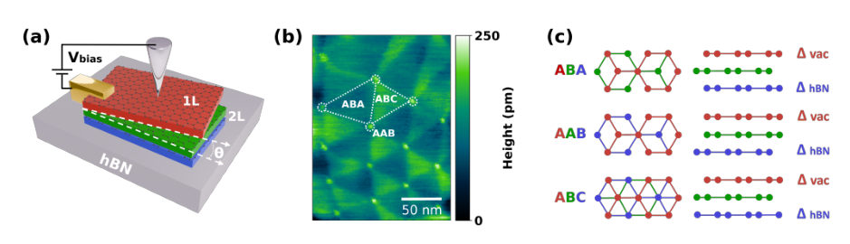
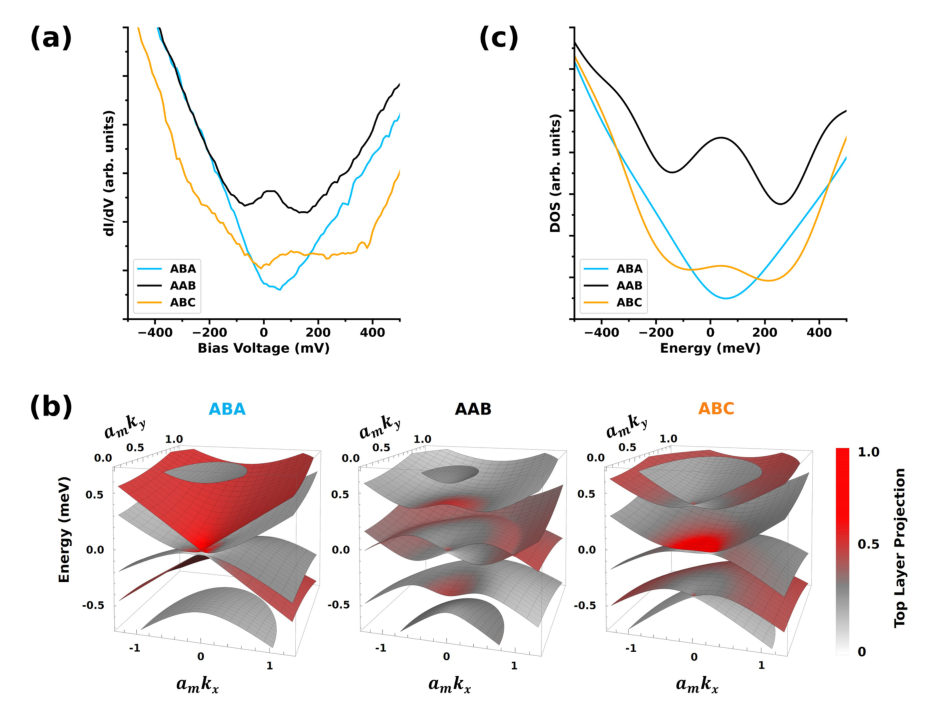

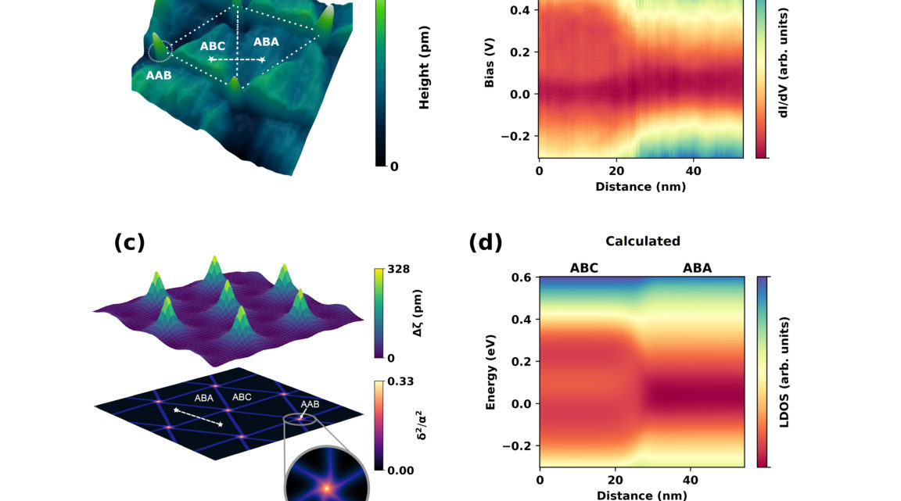
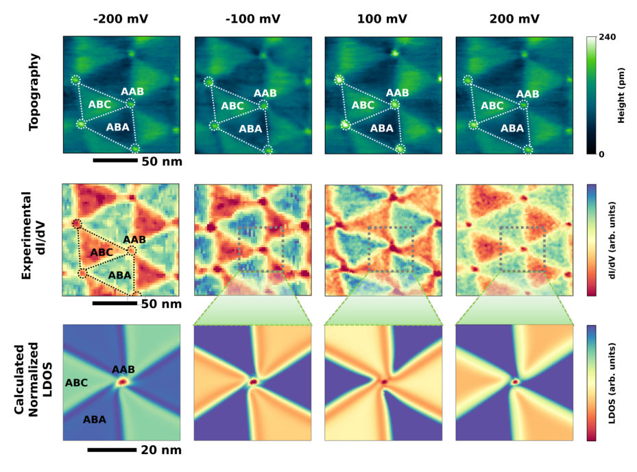
Summary. This paper investigates how atomic-scale reconstruction in nearly zero-degree twisted graphene creates a network of distinct stacking domains. By using STM/STS, the authors show that these domains have unique electronic signatures and that structural deformations drive complex domain wall patterns. This work provides fundamental insights into how structural degrees of freedom can be used to engineer electronic properties in 2D materials.
Why it may be interesting. not directly relevant
Detailed structure
Main problem. Exploring the electronic properties and structural textures of the 'marginally twisted' regime in monolayer-bilayer graphene, where structural reconstruction into distinct stacking domains dominates over a uniform moiré potential.
Main result. The study identifies three distinct stacking domains (ABC, ABA, and AAB) and demonstrates that domain wall 'twirling' is driven by out-of-plane deformations, with electronic features switching as a function of bias voltage.
Method. The researchers used Scanning Tunneling Microscopy (STM) and Spectroscopy (STS) for experimental characterization, combined with a hybrid k.p tight-binding model and mesoscale lattice relaxation calculations using the L-BFGS algorithm.
Model / system. A marginally twisted monolayer-bilayer graphene heterostructure on hBN at a very low rotation angle (approx. 0.3 degrees), featuring a reconstructed network of ABC, ABA, and AAB stacking domains.
Key observables. Local Density of States (LDOS), dI/dV maps, STM topography (apparent height), spectroscopic line maps, and strain tensors (hydrostatic and shear).
Important parameters / regimes. Twist angle theta approx 0.3 degrees, moire superlattice period lambda approx 47 nm, domain wall width approx 7-8 nm, and maximum pseudomagnetic field approx 20 T.
Assumptions / limitations. The model assumes the interface between the first two layers is Bernal stacked and that spatial variations in the local twist angle are due to long-wavelength extrinsic strain.
Figures summary. Figure 1 shows the STM setup and stacking schematics; Figure 2 presents STS spectra and calculated band dispersions/DOS; Figure 3 illustrates 3D topography and domain wall twirling; Figure 4 shows topographic maps at different bias voltages.
Paper structure. The paper introduces the problem of structural reconstruction, describes the experimental and theoretical methods, presents the identification of stacking domains and their electronic signatures, analyzes domain wall dynamics and structural deformations, and concludes with the implications for van der Waals heterostructures.
Abstract
Controlling the stacking and rotational registry of graphene layers provides a powerful handle on atomic-scale structural reconstructions that alter the electronic landscape at the nanoscale. In particular, this governs how massless and massive Dirac fermions coexist and interact at the monolayer-bilayer graphene interface. In the limit of marginal twist, the system reconstructs into domains of distinct vertical stacking order, introducing characteristic electronic properties and new electronic length scales, a regime that, despite its structural richness, remains largely unexplored. Here, using scanning tunnelling microscopy and spectroscopy, we demonstrate that at very low rotation angles the monolayer-bilayer graphene system relaxes into a network of three distinct stacking domains with individual electronic textures revealed through spatially resolved spectroscopic mapping and corroborated by computed local density of states. We report switching of the hierarchy of the tunnelling characteristics between Bernal and rhombohedral domains as a function of bias voltage. Furthermore, the measured spectroscopic maps exhibit theoretically anticipated domain wall 'twirling' around energetically unfavorable AAB stacking nodes, promoted by out-of-plane deformations. Our results shed light on fundamental structure-property relationships underpinning moiré-driven phenomena, opening new avenues for harnessing structural degrees of freedom in van der Waals heterostructures.
Looking for Condensed Gluons: A Cross-Scale Journey from the Deep Structure of Protons to High-Energy Cosmic Rays -- A Mini-Review
Authors: Wei Zhu, Yu-Chen Tang, Ye-Yin Zhao, Bo Yang, Yu-Chen Xiong
Type: theory · Category: other · PDF: https://arxiv.org/pdf/2605.27018v1
Analysis basis: full PDF text, analyzed in chunks
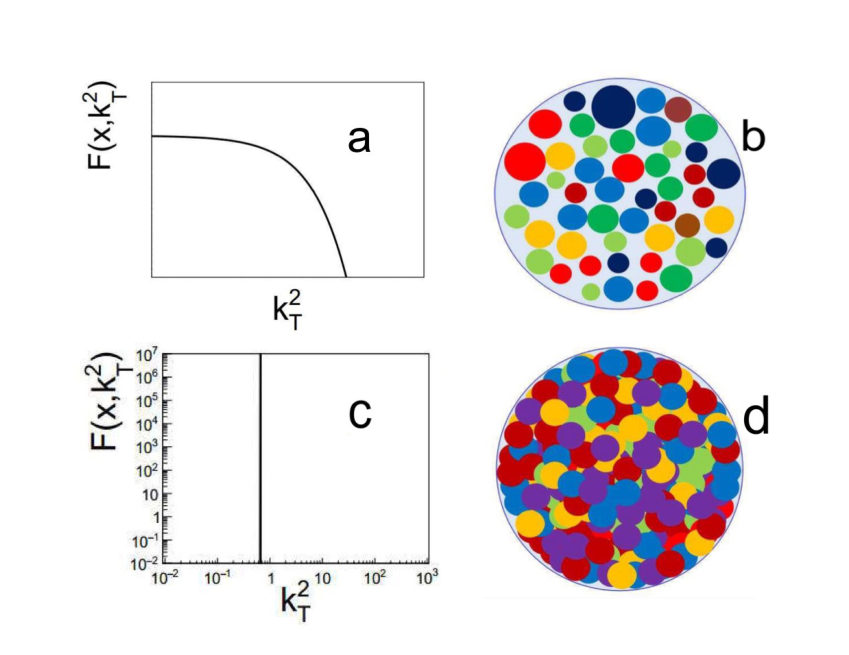
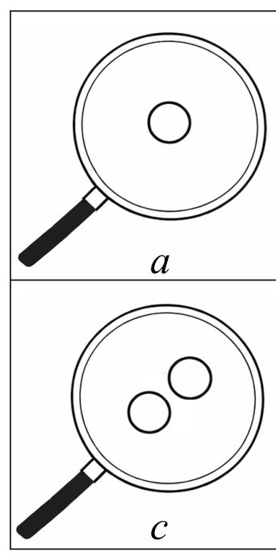
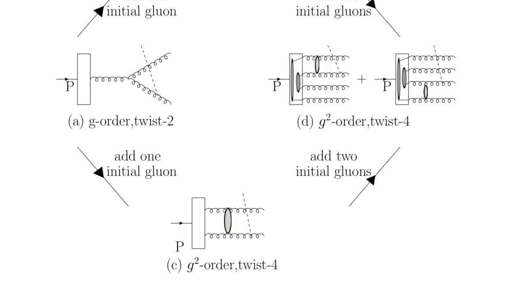
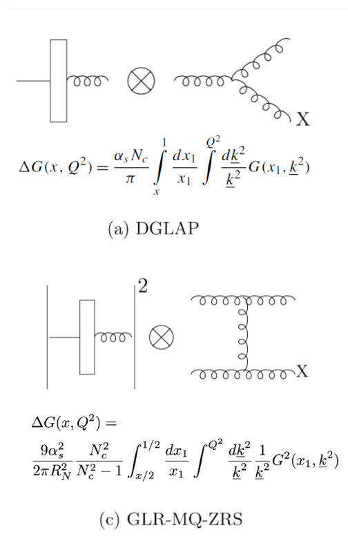
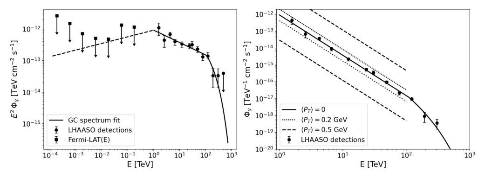
Summary. This review explores the concept of Gluon Condensation (GC) as a link between proton structure and cosmic-ray physics. It argues that nonlinear QCD dynamics can drive gluons to aggregate, creating a high-density state that leaves detectable signatures in the gamma-ray spectra of astrophysical sources. If confirmed, this would provide a new way to probe the deep structure of hadrons using cosmic-ray signals.
Why it may be interesting. not directly relevant
Detailed structure
Main problem. Investigating whether gluon condensation (GC) serves as a bridge between the microscopic internal structure of protons and macroscopic high-energy cosmic-ray phenomena.
Main result. The paper proposes that the ZSR nonlinear evolution equation predicts a gluon condensation state driven by the synergy of shadowing and antishadowing, which manifests as a broken-power-law feature in cosmic gamma-ray spectra.
Method. The authors use Time-Ordered Perturbative Theory (TOPT) to derive the ZSR equation and apply the resulting GC spectrum model to fit observational data from gamma-ray observatories like LHAASO and Fermi-LAT.
Model / system. The physical system involves quark-gluon dynamics within protons and high-energy astrophysical environments (e.g., SNRs, pulsars). The theoretical framework consists of a closed loop of QCD evolution equations (DGLAP, BFKL, GLR-MQ-ZRS, and ZSR).
Key observables. High-energy cosmic gamma-ray spectral energy distributions (SED), specifically broken-power-law features and the presence/absence of the pion-decay bump.
Important parameters / regimes. Critical momentum (kc), critical Bjorken-x (xc), gluon density, and the coupling constant (alpha_s).
Assumptions / limitations. The derivation uses a cylindrically symmetric approximation and neglects certain higher-order QCD corrections; it also assumes a pion saturation mechanism.
Figures summary. Figure 1 compares CGC and GC scales; Figure 2 shows gluon distribution scales; Figure 3 illustrates the evolutionary path of QCD equations; Figure 4 shows elemental amplitudes; Figures 5-12 show fits of the GC model to various gamma-ray sources like SS 433 and J1534-571.
Paper structure. The paper is structured as a mini-review: first establishing the theoretical derivation of the ZSR equation and its role in QCD evolution; second, describing the mechanism of gluon condensation via chaos and shadowing/antishadowing; third, applying this model to astrophysical gamma-ray spectra; and finally, discussing implications for future collider and observatory testing.
Abstract
Quark-gluon dynamics within protons and high-energy radiation phenomena in the universe are typically regarded as two entirely distinct fields. This paper aims to demonstrate that gluon condensation (GC) may serve as a direct bridge between these two fields. We review three key aspects of GC research: first, the Zhu-Shen-Ruan (ZSR) equation, as a nonlinear evolution equation based on structural symmetry, exhibits self-consistent connections with the DGLAP, BFKL and GLR-MQ-ZRS equations, providing a theoretical foundation for the generation of GC; second, the chaotic solutions and the shadowing-antishadowing synergy inherent in this equation can drive gluons to aggregate near the critical momentum, thereby forming a novel type of high-density, strongly interacting matter; third, these changes in microstructure manifest themselves as a broken-power-law feature in high-energy cosmic gamma-ray spectra, thereby offering new insights into the hadronic scenarios underlying certain astrophysical sources. Consequently, GC not only concerns the novel behaviour of quantum chromodynamics under extreme conditions but may also serve as a vital window for probing the deep structure of protons using cosmic-ray signals. With the advancement of higher-precision gamma-ray observations, hadron collision experiments and related theoretical research, the physical picture of GC and its observational criteria are expected to undergo more rigorous testing. Should this picture be confirmed, certain features in the high-energy gamma-ray spectrum will need to be re-examined within the deeper context of hadronic dynamics; simultaneously, GC may also provide a new entry point for research into pion condensation in nuclear physics and even condensed matter physics. Consequently, the significance of the search for GC extends beyond the model itself, reaching into multiple fields of natural science.
Modulation of charge density waves in a twisted vortex moire superlattice
Authors: Qian Fang, Yanhao Shi, Jingyi Duan, Hui Guo, Yikai Chen, Senhao Lv, Jiayi Wang, Zhongyi Cao, Jiayi Huang, Siyu Xu, Haitao Yang, Wei Jiang, Hui Chen, Hong-Jun Gao
Type: both · Category: strongly correlated electrons · PDF: https://arxiv.org/pdf/2605.26510v1
Analysis basis: full PDF text, analyzed in chunks
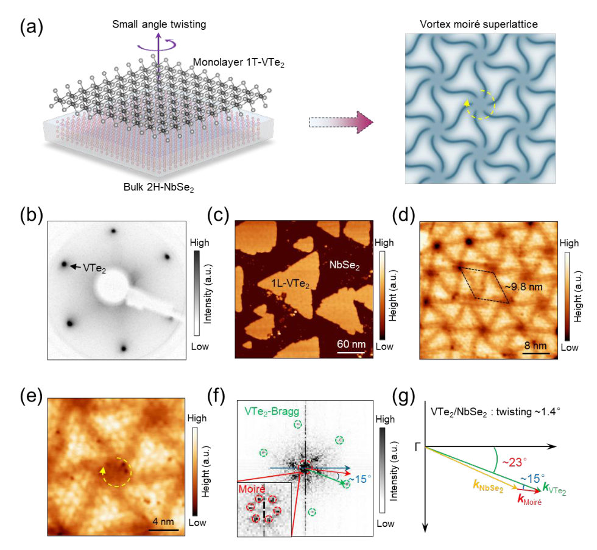
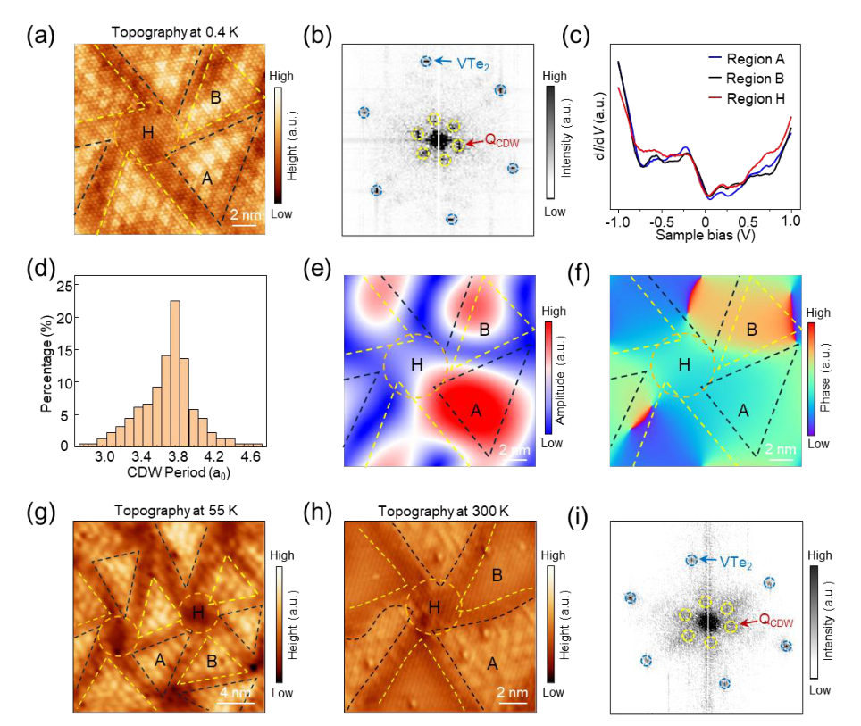
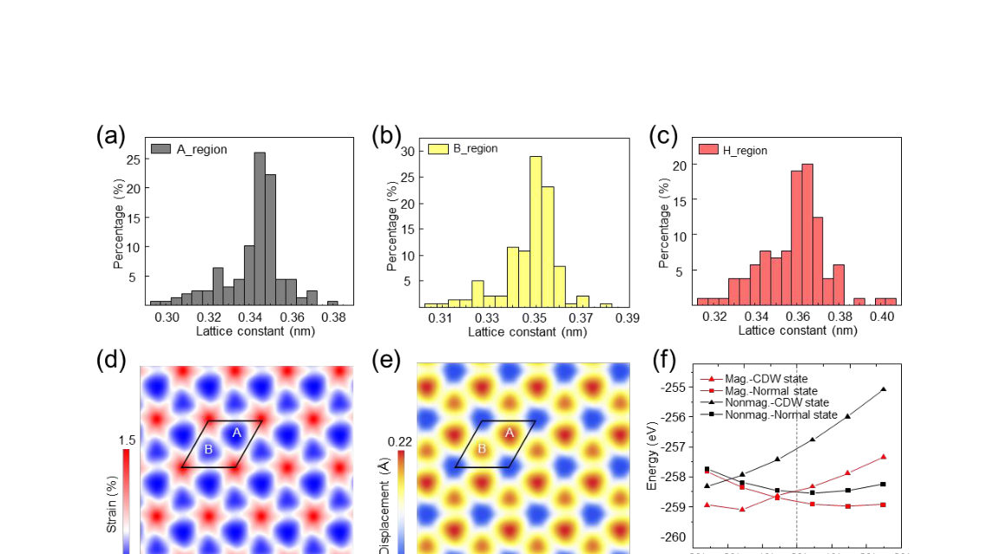
Summary. This paper demonstrates how a twisted moire superlattice can be used to spatially manipulate electronic orders at the nanoscale. By using local strain to fragment a long-range charge density wave into distinct local phases, the researchers show a tunable competition between CDW and superconductivity. This establishes vortex moire superlattices as a versatile platform for engineering correlated electronic states.
Why it may be interesting. not directly relevant
Detailed structure
Main problem. Investigating whether globally coherent electronic orders, specifically charge density waves (CDW), can be continuously manipulated at the nanoscale within a reconstructed twisted vortex moire superlattice.
Main result. The intrinsic long-range CDW in monolayer VTe2 is fragmented into inequivalent local phases driven by local strain, where compressive strain stabilizes CDW and tensile strain suppresses it, creating a competition with proximity-induced superconductivity.
Method. Experimental scanning tunneling microscopy/spectroscopy (STM/STS) combined with first-principles density functional theory (DFT) calculations and atomistic relaxation modeling.
Model / system. A twisted vortex moire superlattice formed by monolayer VTe2 grown epitaxially on bulk NbSe2 in a small-angle (~1.4 degree) and near-commensurate regime.
Key observables. CDW periodicity, local lattice constants, CDW amplitude and phase, superconducting gap depth, and coherence peak intensity.
Important parameters / regimes. Twist angle of ~1.4 degrees, moire periodicity of ~9.8 nm, and temperature range from 0.4 K to 300 K.
Assumptions / limitations. The study focuses on the reconstructed nature of the lattice rather than a rigid moire model.
Figures summary. Figure 1 shows the heterostructure schematic, LEED patterns, and STM topography of the vortex-like moire pattern. Figure 2 displays STM/FFT analysis of the three inequivalent regions (A, B, H) and CDW persistence at high temperatures. Figure 3 provides statistical analysis of the local lattice constants.
Paper structure. The paper introduces the heterostructure and moire texture, presents STM/STS evidence of CDW fragmentation and local phase identification, uses DFT to link these phases to local strain, and concludes by discussing the competition between CDW and superconductivity.
Abstract
Twisted moire superlattices in van-der-Waals heterostructures provide a powerful platform for engineering correlated states through moire-band reconstruction. However, whether globally coherent electronic orders can be continuously manipulated at the nanoscale remains largely unexplored. Reconstructed moire structures in small-angle and near-commensurate regime feature continuously varying local environments, offering new opportunities for nanoscale manipulation of correlated phases. Here, we report the modulation of charge density wave (CDW) states in a twisted vortex moire superlattice formed between monolayer VTe2 and superconducting NbSe2. Scanning tunneling microscopy/spectroscopy reveals that the intrinsic long-range CDW of monolayer VTe2 is reconstructed into inequivalent local phases with distinct stability and coherence within a single moire unit cell, including suppressed CDW order and enhanced short-range CDW correlations persisting to room temperature. First-principles calculations show that the reconstructed CDW landscape originates from strong local strain variation, where compressive strain substantially stabilizes the charge order. Furthermore, the modulated CDW states exhibit competing interplay with proximity-induced superconductivity. Our results establish vortex moire superlattices as a versatile platform for nanoscale manipulation of correlated electronic orders in low-dimensional quantum materials.
Near-Infrared-Triggered Photodynamic Antibacterial Therapy Using Rose Bengal-Coated Upconverting Nanoparticles
Authors: Pratik Deshmukh, Nandini Ahuja, Bhumika Sharma, Khageswar Sahu, Srinibas Satapathy, Shovan Kumar Majumder
Type: experiment · Category: other · PDF: https://arxiv.org/pdf/2605.26557v1
Analysis basis: full PDF text, analyzed in chunks

Summary. This paper describes the creation of upconverting nanoparticles coated with Rose Bengal to enable antibacterial therapy using deep-penetrating near-infrared light. By converting NIR light into visible light, the system triggers the production of reactive oxygen species to kill antibiotic-resistant bacteria like MRSA. This approach addresses the penetration depth limitations of traditional photodynamic therapies.
Why it may be interesting. not directly relevant
Detailed structure
Main problem. Developing an effective near-infrared (NIR)-triggered photodynamic antibacterial therapy to overcome the shallow tissue penetration of visible light and the instability of bare NIR-absorbing photosensitizers.
Main result. Successful synthesis of Rose Bengal-coated LaF3:Er,Yb nanoparticles that efficiently convert NIR light to visible light, enabling significant photo-bactericidal efficacy against MRSA via singlet oxygen generation.
Method. Hydrothermal synthesis of lanthanide-doped LaF3 nanoparticles followed by coating with Rose Bengal; characterization via XRD, TEM, DLS, and FTIR; and antibacterial testing using the zone of inhibition method.
Model / system. The experimental platform consists of LaF3:Er3+,Yb3+ upconverting nanoparticles (UCNPs) functionalized with a Rose Bengal (RB) coating, acting as a transducer for NIR-to-visible light conversion.
Key observables. Upconversion emission (green and red), singlet oxygen (1O2) luminescence at 1270 nm, hydrodynamic diameter, zeta potential, and zone of inhibition diameter.
Important parameters / regimes. 980 nm excitation wavelength, 2 mol% Er3+ and 20 mol% Yb3+ doping, and laser fluence ranging from 120 to 600 J/cm2.
Assumptions / limitations. The efficiency of the therapy relies on the assumption of efficient Forster Resonance Energy Transfer (FRET) between the UCNP and the dye.
Figures summary. The figures document the crystalline structure (XRD), particle size and morphology (DLS, TEM, EDX), surface chemistry (FTIR), optical properties (UV-Vis, PL), singlet oxygen detection, and visual/quantitative antibacterial efficacy (zone of inhibition).
Paper structure. The paper follows a logical progression from material synthesis and structural characterization to optical property analysis (energy transfer efficiency) and finally to biological application (antibacterial assays).
Abstract
Antimicrobial photodynamic therapy (aPDT) is a promising modality for inactivation of antibiotic resistant bacteria, relying on the activation of a photosensitizer (PS) by light of a specific wavelength. This process results in the formation of reactive oxygen species, which ultimately induce cell death. However, aPDT in its conventional form, is limited by the shallow penetration of visible light, restricting its effectiveness for treatment of soft tissue and orthopaedic tissues. To overcome this limitation, near-infrared (NIR) absorbing PS can be used. However, poor stability in vivo after injection, ineffective microbial targeting due to hydrophilic nature and off-site tissue damage are the issues with use of NIR absorbing bare PSs. This issue can be mitigated by combining NIR light with a upconverting nanoparticles (UCNPs), which mediate in conversion of NIR into visible light for effective PS activation. In this study, LaF$_3$:Er$^{3+}$,Yb$^{3+}$ nanoparticles were synthesized using a hydrothermal method and coated with Rose Bengal (RB), a promising hydrophilic PS for aPDT, to evaluate the potential for NIR-triggered aPDT. Characterization of the synthesized UCNPs confirmed the crystalline structure, size distribution and successful RB functionalization. Photophysical studies demonstrated efficient energy transfer between UCNPs and RB, leading to singlet oxygen ($^1$O$_2$) generation in vitro. Antibacterial studies against Methicilin resistant Staphylococcus aureus (MRSA), a superbug of implicated soft tissue and orthopaedic infections, revealed significant photo-bactericidal efficacy upon NIR irradiation, indicating the potential of RB-coated UCNPs for aPDT applications.
Orbital and Spin-Orbit Torque Interplay in Ta/W-based Magnetic Tunnel Junctions with Vertical Non-local Switching
Authors: Marco Biagi, Corrado C. M. Capriata, K. Subham Senapati, Ioannis Trikoilis Koll, Corentin Bouchard, Ricardo C. Sousa, Louis Hutin, Bernard Viala, Kevin Garello
Type: both · Category: other · PDF: https://arxiv.org/pdf/2605.27215v1
Analysis basis: full PDF text, analyzed in chunks

Summary. This paper demonstrates that integrating orbital physics into Ta/W-based magnetic tunnel junctions can significantly enhance spin-orbit torque efficiency. By utilizing the orbital Hall effect, the researchers achieved a much higher torque contribution than standard spin Hall effect-based systems. This approach provides a viable strategy for more efficient and scalable SOT-MRAM fabrication.
Why it may be interesting. not directly relevant
Detailed structure
Main problem. The paper addresses the low write efficiency of Spin-Orbit Torque MRAM (SOT-MRAM) and seeks to enhance the charge-to-spin conversion efficiency by leveraging the Orbital Hall Effect (OHE).
Main result. The Ta/W-based system shows a four-fold increase in SOT contribution compared to Ta alone due to orbital-to-spin conversion, demonstrating superior switching efficiency when normalized by thickness and enabling a vertical non-local switching scheme.
Method. The researchers used Harmonic Hall Voltage measurements to quantify torque efficiencies, applied thickness-dependent studies to estimate diffusion lengths, and used COMSOL simulations to analyze current distribution and shunting effects.
Model / system. The physical system consists of Ta/W-based Magnetic Tunnel Junctions (MTJs) with Ta(3-30 nm)/W(1-4 nm) stacks, featuring a 3-terminal architecture with FeCoB free layers and MgO barriers.
Key observables. Damping-like efficiency (xi_DL), field-like efficiency (xi_FL), spin diffusion length (lambda), orbital Hall angle (theta_OH), and intrinsic critical switching current (I_c0).
Important parameters / regimes. Current density (2 MA/cm^2), annealing temperatures (300 and 400 degrees C), and Ta thickness (up to 40 nm).
Assumptions / limitations. The analysis assumes a drift-diffusion model for spin/orbital transport and a parallel resistor model to separate SHE and OHE contributions.
Figures summary. Figures likely include thickness-dependent efficiency plots, comparison of SOT contributions between Ta, W, and Ta/W, and switching current measurements as a function of pulse length.
Paper structure. The paper introduces the SOT-MRAM efficiency bottleneck, presents the Ta/W material system and its orbital-to-spin conversion mechanism, details the experimental characterization of torque efficiencies, analyzes the impact of electrical shunting versus orbital effects, and concludes with a demonstration of vertical non-local switching.
Abstract
Spin-orbit torque (SOT) enables ultra-fast, energy-efficient magnetization switching, making it a promising mechanism for introducing MRAMs for cache memory applications. However, current SOT-MRAM devices face write efficiency limitations, with charge-to-spin conversion ($ξ_{DL}$) reaching $\sim$ 45\%, far below the projected $\sim$ 80\% needed to comply with the current delivery of advanced transistor nodes. Recent advances in orbital current physics, evidenced in a wide class of materials, offer a path to enhance $ξ_{DL}$. Here, we study the Ta(3-30 nm)\slash W(1-4 nm) system, revealing a large additional spin-orbit torque contribution arising from Ta, a four-fold increase compared to the spin Hall effect in Ta alone, attributed to the orbital Hall contribution. This system exhibits larger $ξ_{DL}$ than W-based SOT systems with more robust perpendicular magnetic anisotropy and compatibility with 400$^\circ$C annealing. Leveraging these advantages, we integrate the Ta/W system into 3-terminal SOT-MTJ devices, showing a level of performance similar to that of W-based systems. Our results show that orbital physics can be easily integrated into SOT-MTJ systems, offering a viable strategy to enhance SOT-MRAM efficiency. In addition, we propose and demonstrate a proof-of-concept for vertical non-local switching of SOT-MTJ using orbital torques, simplifying bottom-pinned SOT-MRAM fabrication.
Orbital Magnetization from Uniform and Periodic Magnetic Fields
Authors: Chunli Huang
Type: theory · Category: strongly correlated electrons · PDF: https://arxiv.org/pdf/2605.26889v1
Analysis basis: full PDF text, analyzed in chunks
Summary. This paper resolves a fundamental question regarding whether orbital magnetization can be calculated using zero-field momentum space methods versus uniform field thermodynamics. By showing these approaches are equivalent in a quantum Hall ferromagnet, it establishes that orbital magnetization is fundamentally linked to the spectral flow described by the Streda formula.
Why it may be interesting. not directly relevant
Detailed structure
Main problem. How can the thermodynamic response to a uniform magnetic field, which changes Landau-level degeneracy and kinetic momentum structure, be reproduced by a linear-response calculation in the momentum space of the zero-field problem?
Main result. The paper proves the equivalence between calculating orbital magnetization via a periodic magnetic field (local response) and via the derivative of the grand potential with respect to a uniform field (global response), interpreting magnetization as energy from spectral flow.
Method. The author uses the Hartree-Fock approximation to compare a local Hartree-Fock projector response to a periodic field with the thermodynamic derivative of the grand potential.
Model / system. A quantum Hall ferromagnet at nu=1 filling, modeled by an N-electron Hamiltonian with long-range Coulomb interactions and a layer-skyrmion texture that creates opposite effective magnetic fields for different spins.
Key observables. Orbital magnetization (M), Streda response (density modulation), Hall conductivity (sigma_xy), and Chern number (C).
Important parameters / regimes. Chemical potential (mu), cyclotron frequency (omega_c), magnetic length (l_B), and the exchange self-energy (Sigma_n).
Assumptions / limitations. The derivation assumes the commutativity of the long-wavelength (q to 0) and low-frequency (omega to 0) limits, which holds for gapped bulk states but not for metals.
Figures summary. Table I compares the results of the uniform field approach and the periodic field approach to demonstrate their agreement.
Paper structure. The paper introduces the fundamental problem of magnetization calculation, presents the model of a quantum Hall ferromagnet, details the two calculation approaches (uniform vs. periodic), demonstrates their analytical equivalence, and concludes with the connection to the Streda formula and Hall conductivity.
Abstract
Magnetization is thermodynamically defined as the derivative of the grand potential with respect to a uniform magnetic field. However, a uniform magnetic field makes the kinetic momentum operators noncommuting and Landau-quantizes the electron motion. This changes the zero-field momentum-space to Landau-levels and raises a fundamental question: how can the thermodynamic response to a uniform field be reproduced by a linear-response calculation carried out in the momentum space of the zero-field problem? We address this question analytically in a quantum Hall ferromagnet that allows the orbital magnetization $M$ to be computed in a closed form. We first compute $M$ from the local Hartree--Fock projector response to a periodic magnetic field with zero net flux. We then compute $M$ from the derivative of the grand potential with respect to a uniform magnetic field along the Středa line. The two approaches give the same result, even though the first keeps the Hilbert space fixed while the second changes the Landau-level degeneracy. Their agreement suggests that we should view orbital magnetization as the energy associated with the spectral flow that gives rise to the Středa formula. Our work provides a tutorial introduction to orbital magnetization and its relation to the Středa formula.
Overcoming contact resistance at metal-2D semiconductor interfaces: atomically clean MoS2/Au ohmic junctions
Authors: Rafal Dunal, Maxime Le Ster, Iaroslav Lutsyk, Michal Piskorski, Pawel Dabrowski, Pawel Krukowski, Witold Kozlowski, Aleksandra Nadolska, Wojciech Rys, Pawel J. Kowalczyk, Maciej Rogala
Type: both · Category: other · PDF: https://arxiv.org/pdf/2605.27187v1
Analysis basis: full PDF text, analyzed in chunks
Summary. This paper demonstrates that the high contact resistance in MoS2/Au junctions is an extrinsic effect caused by interfacial contamination rather than an intrinsic Schottky barrier. By using ultra-high vacuum preparation, the authors reveal a highly conductive ohmic interface and show that mechanical pressure can even restore pristine contact quality.
Why it may be interesting. not directly relevant
Detailed structure
Main problem. High contact resistance and conflicting reports regarding the thickness-dependent conductivity of MoS2/Au junctions are often attributed to intrinsic Schottky barriers, but may actually stem from extrinsic interfacial contamination.
Main result. The study proves that the intrinsic MoS2/Au junction is highly conductive and ohmic when prepared in ultra-high vacuum (UHV), demonstrating that previously reported high resistance is due to air-borne contamination.
Method. The researchers used a custom UHV system for atomically clean exfoliation and compared it to ambient-prepared samples, using Conductive Atomic Force Microscopy (CAFM) for electrical mapping and a Kirchhoff-based resistor network model for simulation.
Model / system. The physical system consists of monolayer and multilayer MoS2 on Au(111) substrates, comparing UHV-prepared (clean) interfaces to ex situ (contaminated) interfaces.
Key observables. Contact resistance, I-V linearity (ohmic vs. non-linear), current-thickness dependence, and Raman mode shifts.
Important parameters / regimes. MoS2 layer number (1 to 6 layers), tip load force (nN), and interface quality (UHV vs. ambient).
Assumptions / limitations. The CAFM response is assumed to be linear for currents below 10 nA; thickness estimation in UHV samples relied on relative height differences due to substrate contamination during transfer.
Figures summary. Figure 1 compares UHV and ex situ topography and current maps; Figure 2 shows resistance vs. layer number for both regimes; Figure 3 demonstrates the restoration of conductivity via CAFM tip lamination.
Paper structure. The paper introduces the contact resistance problem, describes the UHV experimental setup, compares clean vs. contaminated transport properties, provides a resistor-network model to reconcile thickness-dependent trends, and demonstrates local contact restoration via lamination.
Abstract
The application of two-dimensional (2D) semiconductors, such as monolayer MoS2, is limited by the high contact resistance commonly attributed to interfacial barriers at metal contacts. Furthermore, the dependence of electrical conductivity on MoS2 thickness is still unsettled, as both increasing and decreasing trends with layer number have been reported. By showing the contrast between electrical transport of mono- and multilayer MoS2 exfoliated on Au under ultra-high vacuum (UHV) and ambient conditions, we experimentally prove that, contrary to the prevailing view in the literature, the intrinsic MoS2/Au junction is highly conductive and exhibits ohmic behaviour. Our results indicate that interfacial contamination is responsible for the high contact resistances reported to date and affects the thickness dependence of electrical transport, explaining the discrepancies observed in the literature. We rationalize those findings using electrical transport simulations. Lastly, we show that local force-mediated lamination on lightly contaminated contacts can recover pristine, ohmic contacts, offering a route towards nanoscale patterning.
Phase-Topology Classification of Memristor Hysteresis Loops via Self-Crossings
Authors: Ovidiu-Zeno Lipan, Eric Neuhaus, Rafael Schio Wengenroth Silva, Soumen Pradhan, Fabian Hartmann, Leonardo K. Castelano, Ana Luiza Costa Silva, Sven Höfling, Victor Lopez-Richard
Type: theory · Category: disordered systems and neural networks · PDF: https://arxiv.org/pdf/2605.27342v1
Analysis basis: full PDF text, analyzed in chunks

Summary. This paper provides a rigorous mathematical framework to classify the different shapes of memristor hysteresis loops based on their topological self-crossings. By using catastrophe theory, it predicts how changing voltage amplitude or frequency can cause sudden changes in the device's memory characteristics. This is significant for designing more complex, multi-lobed memristive devices for neuromorphic computing.
Why it may be interesting. not directly relevant
Detailed structure
Main problem. The geometric complexity and topological classification of self-crossings in memristor hysteresis loops are poorly understood, specifically regarding how parameter changes drive transitions between different loop morphologies.
Main result. The authors establish a topological framework where the number of self-crossings is a robust integer-valued invariant, using singularity theory to map out the parameter space boundaries (catastrophe surfaces) where these crossings emerge or disappear.
Method. The study employs differential topology, singularity theory (specifically the cusp catastrophe), and algebraic tools like discriminants and resultants to stratify a six-dimensional parameter space.
Model / system. A generalized voltage-controlled memristive system where memductance is a perturbed constant admittance modulated by an internal state variable that evolves via a relaxation-type equation.
Key observables. Crossing number (number of self-intersections), susceptance polynomial roots, and local admittances.
Important parameters / regimes. Dimensionless frequency (p = omega*tau), drive amplitude (A), and polynomial coefficients (xi_k) defining the nonlinear response.
Assumptions / limitations. The state evolution is simplified to a linear relaxation-type equation, and the memductance is assumed to be a linear perturbation of a constant admittance.
Figures summary. Figures illustrate the mapping of hysteresis loops to a unit circle, the identification of bifurcation boundaries in parameter space, and the visualization of cusp catastrophe dynamics and phase-space trajectories.
Paper structure. The paper begins by defining the problem of loop geometry, introduces a generalized memristive model, applies singularity theory to classify parameter regions, uses algebraic tools to find bifurcation boundaries, and concludes with a discussion on the implications for hardware design.
Abstract
Memristive devices have revolutionized non-volatile memory and neuromorphic computing, yet the geometry of their hysteresis loops -- in particular, the occurrence and robustness of multiple self-crossings -- remains poorly understood. Here we introduce a topological and algebraic framework that treats the number of transverse self-intersections of a memristor hysteresis loop as a robust integer-valued invariant. Drawing on differential topology, singularity theory, and cusp catastrophe, we employ discriminants and resultants to stratify the six-dimensional parameter space. This approach partitions the parameter space into structurally stable regions separated by explicitly computable catastrophe surfaces. We demonstrate that the crossing number remains strictly invariant under continuous deformations and changes only at self-tangencies or cusp singularities, thereby providing a complete classification of all multi-lobed hysteresis behaviors. These insights bridge device physics with modern singularity theory and suggest a clear roadmap for exploiting higher-order memory effects in next-generation electronics and brain-inspired hardware.
Spontaneous persistent currents and time-reversal symmetry breaking in thick-walled Weyl semimetal cylinders
Authors: J. C. Pérez-Pedraza, Juan A. Cañas, Daniel A. Bonilla, A. Martín-Ruiz
Type: theory · Category: other · PDF: https://arxiv.org/pdf/2605.27368v1
Analysis basis: full PDF text, analyzed in chunks
Summary. This paper theoretically demonstrates that the intrinsic separation of Weyl nodes in a cylindrical geometry breaks time-reversal symmetry, creating spontaneous persistent currents without an external magnetic field. It also shows how longitudinal confinement in finite cylinders leads to the splitting of conductance channels. These findings highlight how topological properties and geometry can be used to control electronic transport in Weyl semimetals.
Why it may be interesting. not directly relevant
Detailed structure
Main problem. Investigating the Aharonov-Bohm effect and the emergence of spontaneous persistent currents in thick-walled Weyl semimetal (WSM) cylinders due to time-reversal symmetry breaking.
Main result. The spatial separation of Weyl nodes acts as an internal chiral gauge field that breaks time-reversal symmetry, leading to spontaneous persistent currents even at zero external magnetic flux and the unfolding of conductance channels.
Method. Analytical solution of the eigenvalue problem using a low-energy effective Hamiltonian in cylindrical coordinates, applying infinite-mass boundary conditions at radial walls and MIT bag boundary conditions at cylinder caps.
Model / system. A thick-walled Weyl semimetal cylinder (infinite or finite length) subject to an external axial magnetic flux through the inner cavity, modeled by a 4x4 low-energy effective Hamiltonian incorporating node separation.
Key observables. Energy spectrum, persistent currents, conductance channels, partial density of states (PDOS), and probability currents (angular and transversal).
Important parameters / regimes. Chiral node separation (b), magnetic flux (Phi), cylinder radii (r1, r2), cylinder length (L), and longitudinal momentum (kz).
Assumptions / limitations. Assumes a two-node Weyl semimetal model and neglects inter-valley scattering at the radial boundaries.
Figures summary. Figure 1 shows the cylinder geometry; Figures 2-4 illustrate energy eigenvalues and persistent currents vs. flux; Figures 9-10 show conductance resonances and energy branch unfolding; Figures 11-12 display spatial distributions of probability density and currents.
Paper structure. The paper introduces the WSM cylinder geometry and Hamiltonian, develops the analytical solution for energy eigenvalues under specific boundary conditions, analyzes the effects of node separation and magnetic flux on the energy spectrum and persistent currents, explores conductance and density of states in finite cylinders, and concludes with a discussion on experimental consistency.
Abstract
We theoretically investigate the Aharonov-Bohm effect in a thick-walled Weyl semimetal (WSM) cylinder subject to an external axial magnetic field. By employing a low-energy effective Hamiltonian, we analytically solve the eigenvalue problem for both infinite and finite-length cylindrical geometries. We apply infinite-mass boundary conditions at the radial walls and MIT bag boundary conditions at the cylinder caps to properly account for intra-node confinement and inter-valley scattering, respectively. Our numerical results demonstrate that the spatial separation of the Weyl nodes acts as an internal chiral gauge field. This geometric field intrinsically breaks time-reversal (TR) symmetry, lifting the chiral degeneracy even at zero external flux. This symmetry breaking manifests as spontaneous persistent currents and the unfolding of conductance channels. Furthermore, longitudinal confinement induces propagation-direction-dependent energy splitting, altering the partial density of states and causing spatio-chiral current imbalances.
Superconductivity-enhanced phonon angular momentum
Authors: Natsuki Okada, Philipp Werner, Shintaro Hoshino
Type: theory · Category: strongly correlated electrons · PDF: https://arxiv.org/pdf/2605.26794v1
Analysis basis: full PDF text, analyzed in chunks
Summary. This paper theoretically demonstrates that superconductivity causes a dramatic enhancement and a sign reversal in phonon angular momentum in fulleride-like systems. It identifies that the enhancement is driven by the ratio of the electronic bandwidth to the phonon frequency. The work provides a new way to understand how orbital angular momentum is transferred from electrons to the lattice in correlated superconductors.
Why it may be interesting. not directly relevant
Detailed structure
Main problem. The study investigates the mechanism behind the enhancement and sign reversal of phonon angular momentum (PAM) when a system enters the superconducting state under an external magnetic field.
Main result. The researchers show that PAM is significantly enhanced in the superconducting state by a factor of order D/omega_1 and undergoes a sign reversal due to the competition between Fermi surface and Fermi volume contributions.
Method. The study uses a theoretical framework combining the local Eliashberg theory with Dynamical Mean-Field Theory (DMFT) and a spherical tensor formalism to analyze phonon self-energy.
Model / system. The model system is fulleride compounds (e.g., A3C60) in an external magnetic field, modeled using a three-orbital Hubbard model with p-type fermions and Jahn-Teller phonon modes.
Key observables. Phonon angular momentum (PAM), electronic orbital angular momentum (OAM), superconducting gap function (Delta), and phonon self-energy.
Important parameters / regimes. Electronic bandwidth (D), superconducting gap (Delta), phonon frequency (omega_1), transition temperature (Tc), and magnetic field strength (h).
Assumptions / limitations. Assumes a featureless semi-elliptical density of states, neglects direct phonon Zeeman contribution, and uses the BCS limit (no retardation effect) for certain analytical derivations.
Figures summary. Fig 1(a) shows the temperature dependence of the superconducting gap; Fig 1(b) shows the decrease in electronic OAM below Tc; Fig 1(c) illustrates the sign reversal of normalized PAM below Tc.
Paper structure. The paper introduces the problem of PAM in superconductors, describes the Hubbard-Jahn-Teller model and Eliashberg framework, presents the calculation of phonon self-energy and angular momentum, discusses the enhancement and sign reversal mechanisms, and concludes with implications and future work.
Abstract
We theoretically investigate the properties of phonon angular momentum in the superconducting state, using fulleride compounds in an external magnetic field as a model system. The electron orbital angular momentum injected by an external field is transferred to the phonon subsystem via electron--phonon coupling. We show that this field-induced phonon angular momentum is significantly enhanced and undergoes a sign reversal upon entering the superconducting state. In the normal state, the dominant energy scale governing the response function is the electronic bandwidth $D$. In the superconducting state, the phonon energy scale $ω_1$ enters the denominator, leading to an enhancement of order $D/ω_1$. The observed sign change in the response can be explained by the competition between Fermi surface and Fermi volume contributions.
Terahertz spin-current transparency through rough interfaces
Authors: Jiří Jechumtál, Jakub Zázvorka, Ondřej Novák, Martin Rejhon, Peter Kubaščík, Lukáš Nowak, Petr Němec, Eva Schmoranzerová, Martin Veis, Lukáš Nádvorník, Zdeněk Kašpar
Type: experiment · Category: other · PDF: https://arxiv.org/pdf/2605.26837v1
Analysis basis: full PDF text, analyzed in chunks
Summary. This study shows that spin-current transparency in Co|Pt heterostructures is surprisingly resistant to changes in interface roughness and grain size. By using THz spectroscopy, the researchers demonstrate that ultrafast spin transport is robust against morphological variations, which is a positive sign for the development of large-scale spintronic devices.
Why it may be interesting. not directly relevant
Detailed structure
Main problem. Investigating how interface roughness (both vertical and lateral) affects the spin-current transparency (ts) in Co|Pt heterostructures at ultrafast (THz) frequencies.
Main result. Spin-current transparency decreases by only about 30% even when interface roughness and grain size increase by a factor of three, demonstrating that interfacial spin transport is relatively robust against morphological variations on ultrafast timescales.
Method. Terahertz emission spectroscopy using femtosecond laser excitation, combined with AFM for roughness characterization and numerical FDTD simulations to account for sample impedance and optical absorption.
Model / system. Co|Pt heterostructures with a variable thickness Au buffer layer (Au(5)|Co(2)|Pt(5)|Au(d)|Si) used as a spintronic THz emitter.
Key observables. THz electric field strength, THz spectrum, interface spin-current transparency (ts), RMS roughness, and lateral grain size (EDR).
Important parameters / regimes. Ultrafast (sub-picosecond) timescales, spin diffusion length in Pt, and interface roughness scales (0.3-10 nm).
Assumptions / limitations. The platinum crystalline quality and spin Hall angle remain constant across all samples, and the spin voltage/current scales directly with optical absorption and transparency.
Figures summary. Fig 1: Schematic of THz emission mechanism; Fig 2: THz waveforms, frequency spectra, and AFM topography maps; Fig 3: Plots of impedance, absorption, and roughness parameters vs. Au thickness; Fig 4: Extraction of spin transparency vs. roughness parameters.
Paper structure. The paper introduces the problem of interface roughness, describes the experimental setup and sample preparation, presents the characterization of morphology via AFM, details the THz spectroscopy results, and concludes with a discussion on the robustness of spin transport.
Abstract
Spin transport across interfaces is critical for spintronic devices, yet remains difficult to probe on ultrafast timescales. We use terahertz emission spectroscopy on Co|Pt heterostructures whose interface roughness is tuned through the thickness of an underlying Au buffer layer, while leaving other growth parameters unchanged. From the measured THz electric field, we extract the interface spin-current transparency ts after correcting for the changes in sample impedance and optical absorption of the stack. Surprisingly, we find that ts decreases by only approximately 30% as the interface root-mean-square roughness and the lateral grain size both increase by a factor of three, with no measurable change in the THz spectrum. These results demonstrate that interfacial spin transport is relatively robust against morphological variations on ultrafast timescales, establishing terahertz emission spectroscopy as a reliable probe of spin dynamics across imperfect interfaces.
← Index · ← Previous · Next →